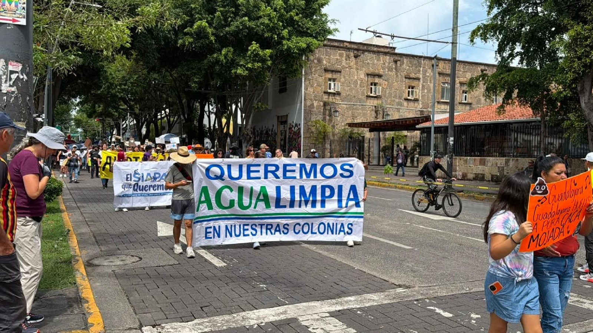

Imagen: N+
Hay obras que un gobierno puede inaugurar y fotografiar, y hay otras cuya importancia solo se vuelve evidente cuando dejan de funcionar. El agua pertenece a esta segunda categoría.
El 11 de octubre, alrededor de diez mil personas marcharon en Guadalajara para exigir agua limpia. El problema era aún mayor: las denuncias por mala calidad del suministro afectaban a más de 600 colonias (El País, 2026) y el diagnóstico del IMDEC registró que de 784 personas que reportaron su caso, solo seis dijeron haber conseguido una solución.
¿Por qué un problema de esta magnitud necesita llegar a las calles para ocupar el centro de la conversación pública?
Garantizar agua potable exige inversiones, mantenimiento y decisiones cuyos resultados no siempre son visibles: una calle pavimentada puede inaugurarse; una red que funciona difícilmente produce la misma fotografía y, para un gobierno con un horizonte de tres años, privilegiar los resultados visibles puede resultar tentador. La prevención tiene una paradoja política: cuando funciona, nadie ve el desastre que evitó. El problema es que el agua no puede esperar a que sus soluciones sean electoralmente atractivas.
La crisis revela otra desigualdad menos visible: no todas las fallas de un servicio básico reciben la misma atención. En Iztapalapa, donde la falta de agua ha sido una demanda histórica, se registraron 6,158 solicitudes por desabasto entre enero y junio de 2026 (La Jornada, 2026).
En Guadalajara, la contaminación puso en cuestión otra certeza: que el agua que llega a casa es segura. Son problemas distintos, pero plantean una misma pregunta: ¿por qué algunas carencias pueden prolongarse durante años sin provocar la misma urgencia política que una crisis que irrumpe en la vida de quienes esperaban tener el servicio garantizado?
El SIAPA está en el centro de esta discusión, pero la responsabilidad no se agota en un organismo ni comenzó con la actual administración; la infraestructura envejece y las omisiones atraviesan gobiernos. Eso no exime a las autoridades actuales: les corresponde explicar, corregir y rendir cuentas.
Una crisis de agua es también una crisis de prioridades; gobernar no consiste únicamente en construir lo que se ve, sino en cuidar aquello de lo que depende la vida cotidiana, incluso cuando hacerlo no ofrece reconocimiento inmediato.
La confianza en las instituciones no se gana el día en que se inaugura una obra. Se gana mucho antes: cuando los servicios funcionan y las decisiones de hoy evitan las crisis de mañana. El mantenimiento quizá no produzca aplausos, pero también es una forma de gobernar. El agua limpia no debería depender de cuándo logra hacerse visible un problema, sino de la capacidad de las instituciones para anticiparse a él.
CIPMEX · Centro de Investigación para la Paz México, A.C. · Paz que se piensa, paz que se construye